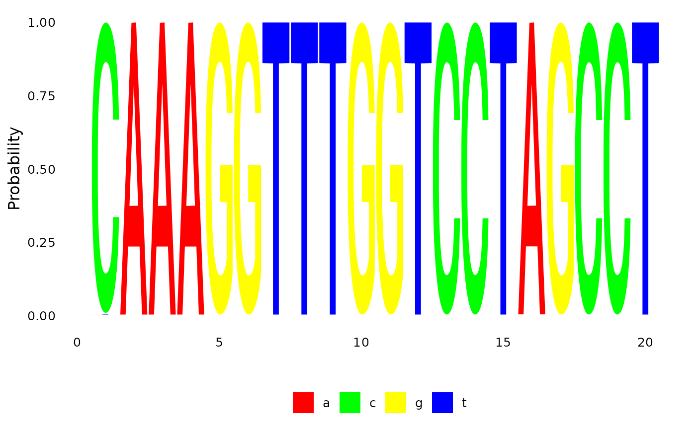
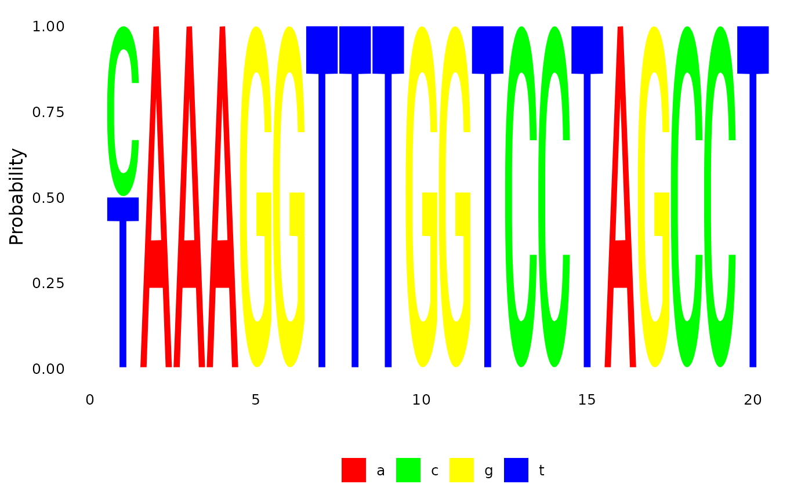
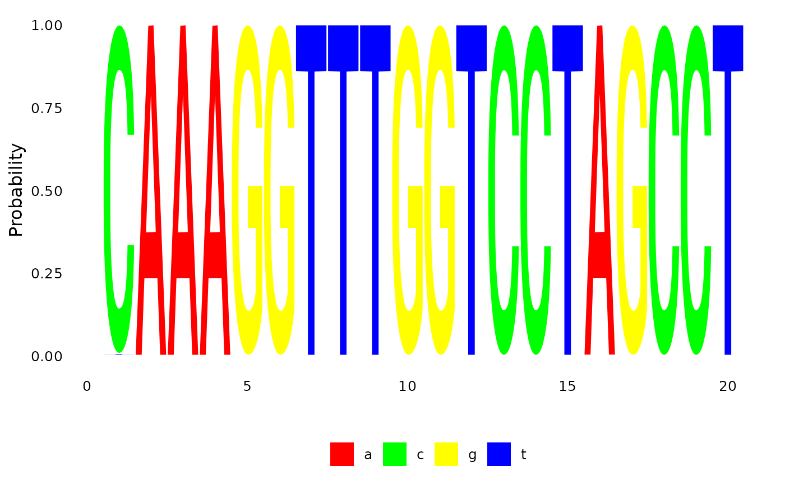
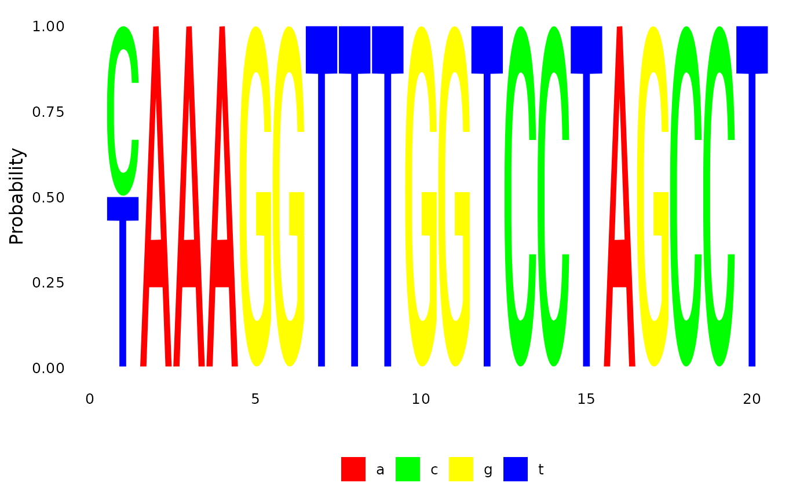

Marginal reconstruction of the ancestral character states.
Usage
ancestral.pml(object, type = "marginal", return = "prob")
ancestral.pars(tree, data, type = c("MPR", "ACCTRAN", "POSTORDER"),
cost = NULL, return = "prob")
pace(tree, data, type = c("MPR", "ACCTRAN", "POSTORDER"), cost = NULL,
return = "prob")
plotAnc(tree, data, i = 1, site.pattern = TRUE, col = NULL,
cex.pie = par("cex"), pos = "bottomright", ...)Arguments
- object
an object of class pml
- type
method used to assign characters to internal nodes, see details.
- return
return a
phyDatobject or matrix of probabilities.- tree
a tree, i.e. an object of class pml
- data
an object of class phyDat
- cost
A cost matrix for the transitions between two states.
- i
plots the i-th site pattern of the
data.- site.pattern
logical, plot i-th site pattern or i-th site
- col
a vector containing the colors for all possible states.
- cex.pie
a numeric defining the size of the pie graphs
- pos
a character string defining the position of the legend
- ...
Further arguments passed to or from other methods.
Details
The argument "type" defines the criterion to assign the internal nodes. For
ancestral.pml so far "ml" and (empirical) "bayes" and for
ancestral.pars "MPR" and "ACCTRAN" are possible.
With parsimony reconstruction one has to keep in mind that there will be often no unique solution.
For further details see vignette("Ancestral").
References
Felsenstein, J. (2004). Inferring Phylogenies. Sinauer Associates, Sunderland.
Swofford, D.L., Maddison, W.P. (1987) Reconstructing ancestral character states under Wagner parsimony. Math. Biosci. 87: 199--229
Yang, Z. (2006). Computational Molecular evolution. Oxford University Press, Oxford.
Author
Klaus Schliep klaus.schliep@gmail.com
Examples
example(NJ)
#>
#> NJ> data(Laurasiatherian)
#>
#> NJ> dm <- dist.ml(Laurasiatherian)
#>
#> NJ> tree <- NJ(dm)
#>
#> NJ> plot(tree)
 fit <- pml(tree, Laurasiatherian)
anc.ml <- ancestral.pml(fit, type = "ml")
anc.p <- ancestral.pars(tree, Laurasiatherian)
if (FALSE) {
require(seqLogo)
seqLogo( t(subset(anc.ml, 48, 1:20)[[1]]), ic.scale=FALSE)
seqLogo( t(subset(anc.p, 48, 1:20)[[1]]), ic.scale=FALSE)
}
# plot the first site pattern
plotAnc(tree, anc.ml, 1)

# plot the third character
plotAnc(tree, anc.ml, attr(anc.ml, "index")[3])

fit <- pml(tree, Laurasiatherian)
anc.ml <- ancestral.pml(fit, type = "ml")
anc.p <- ancestral.pars(tree, Laurasiatherian)
if (FALSE) {
require(seqLogo)
seqLogo( t(subset(anc.ml, 48, 1:20)[[1]]), ic.scale=FALSE)
seqLogo( t(subset(anc.p, 48, 1:20)[[1]]), ic.scale=FALSE)
}
# plot the first site pattern
plotAnc(tree, anc.ml, 1)

# plot the third character
plotAnc(tree, anc.ml, attr(anc.ml, "index")[3])
